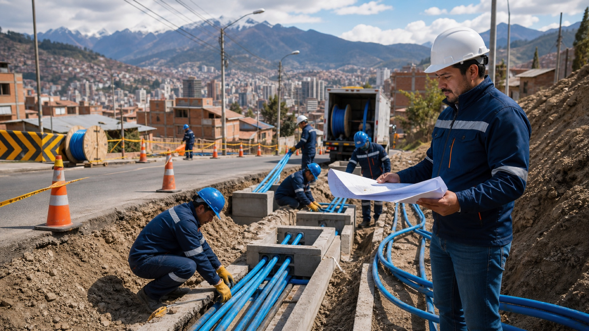
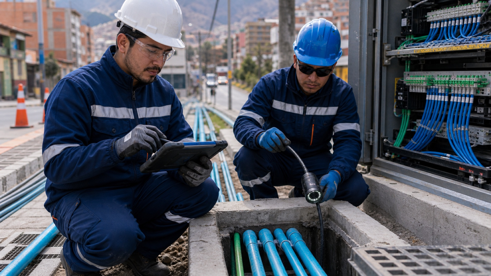
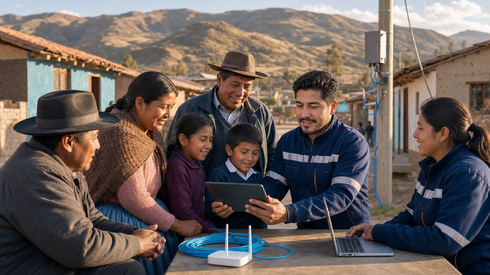
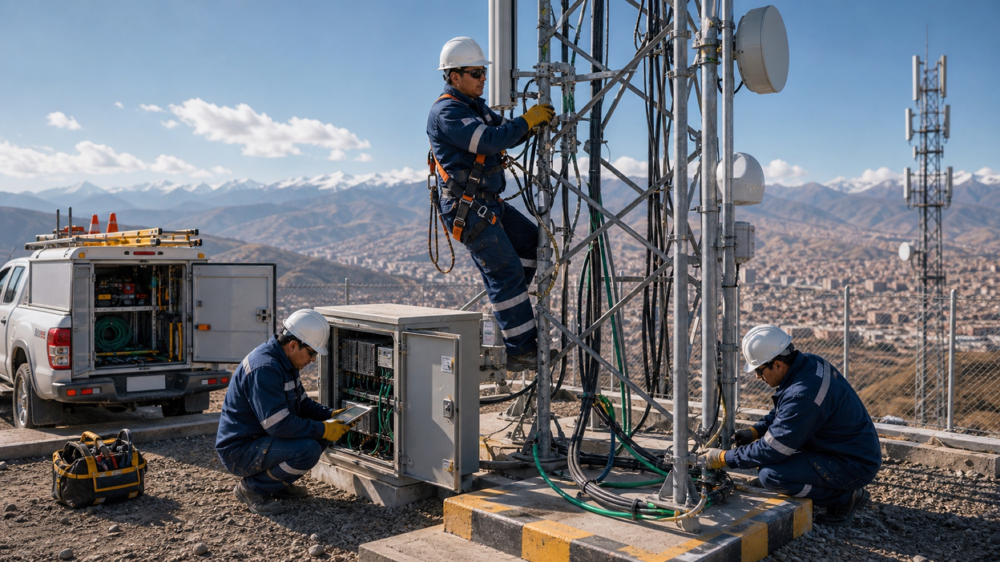
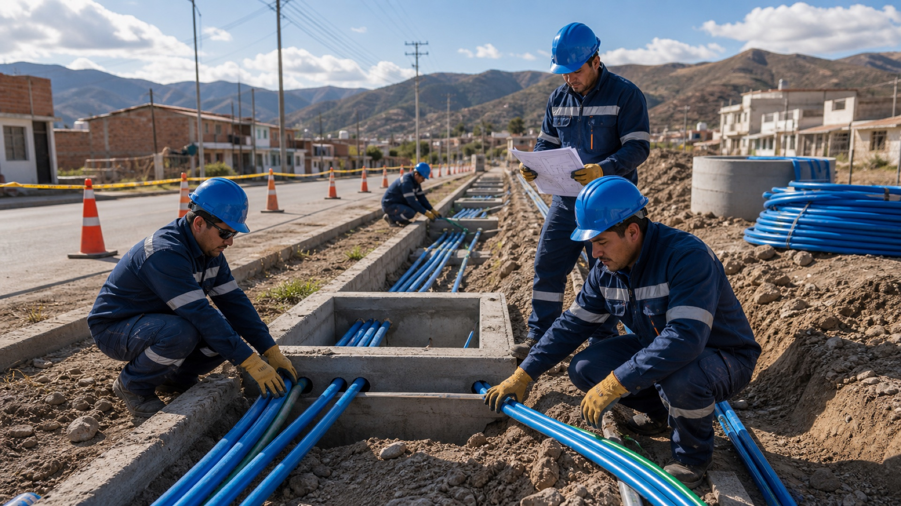
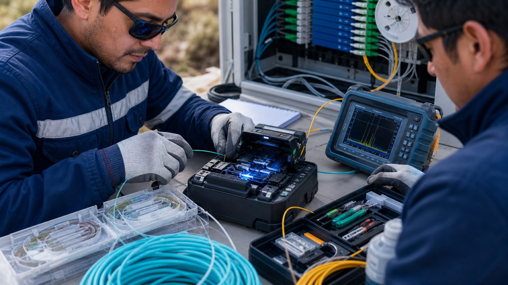
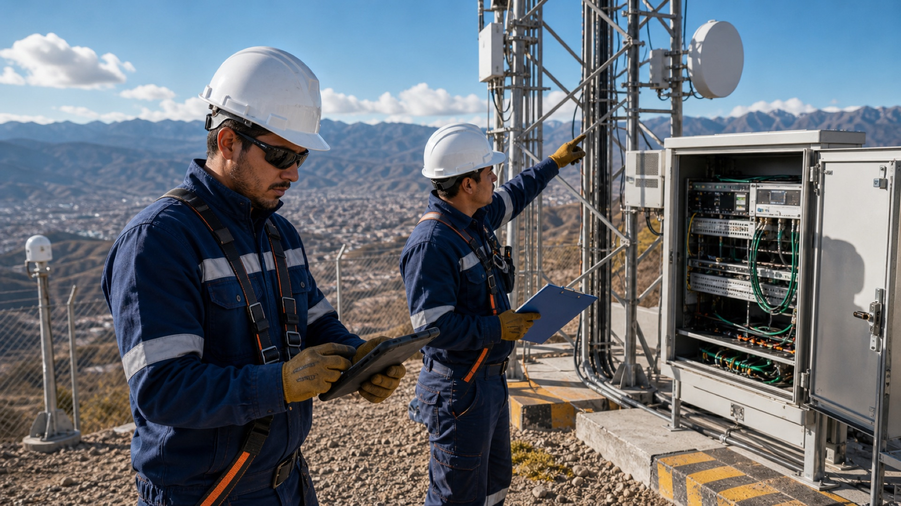
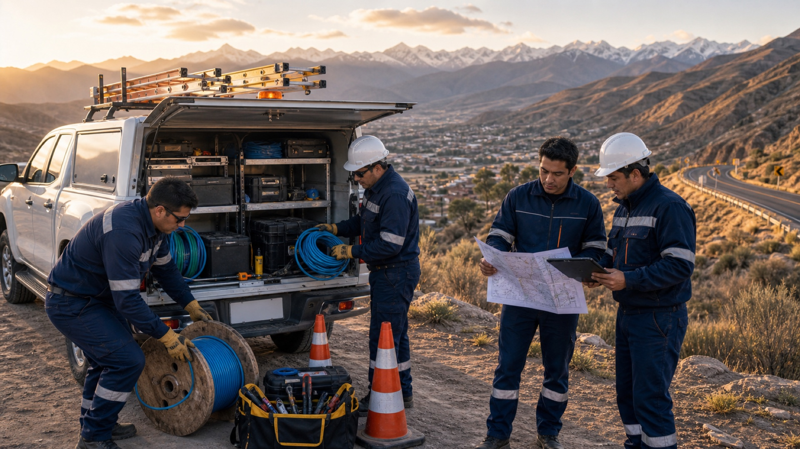
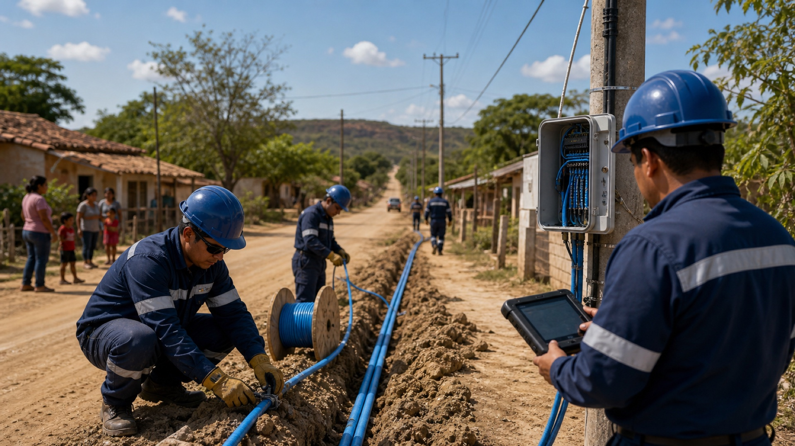
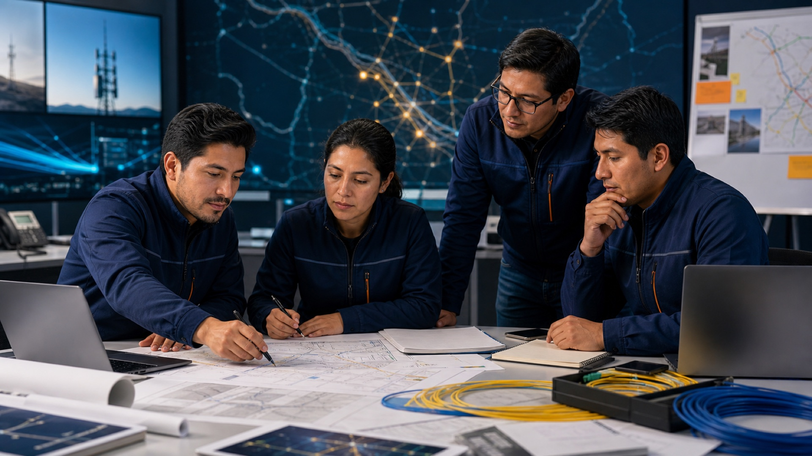

Empresa boliviana creada en 2015
CIVILTELECOM S.R.L.
Construimos conexiones, diseñamos el futuro
Obras civiles, fibra óptica y antenas para empresas y operadores. Planificación, ejecución en campo y documentación técnica, con disponibilidad en toda Bolivia.
Creada en 2015
Trabajo con ENTEL
Cobertura nacional
Infraestructura confiable
Infraestructura para la operación y el crecimiento de tu red
Creamos rutas, bases, canalizaciones, tendidos y enlaces que sostienen servicios de comunicación para empresas, operadores y comunidades. Cada proyecto se gestiona con criterio técnico, cumplimiento y seguimiento de campo.

Método profesional
Gestionamos infraestructura con control de obra y visión operativa
Relevamiento técnico
Analizamos rutas, interferencias, accesos, necesidades de materiales y condiciones de seguridad antes de movilizar cuadrillas.
Planificación de ejecución
Definimos frentes de trabajo, cronograma, responsables, puntos críticos y entregables para mantener control del avance.
Supervisión en campo
Verificamos calidad, seguridad, mediciones, registro fotográfico y cumplimiento técnico durante la construcción o instalación.
Cierre documentado
Entregamos información clara para operación, mantenimiento y continuidad del servicio, con observaciones y respaldos de obra.
Obras civiles
Canalización, ductos, cámaras, bases y adecuaciones para infraestructura crítica.
Fibra óptica
Despliegue, fusión, medición y puesta en servicio de redes de transporte y acceso.
Antenas y torres
Instalación, alineación, mantenimiento y soporte para sitios de telecomunicaciones.

Inspección técnica
Control antes de ejecutar
Revisamos accesos, trazados, ductos y condiciones de seguridad para preparar cada frente de trabajo.

Impacto comunitario
Conectividad con propósito
La infraestructura de telecomunicaciones abre oportunidades para educación, comercio y servicios digitales.

Seguridad en altura
Mantenimiento especializado
Los sitios de antenas requieren procedimiento, equipamiento, supervisión y registro técnico.
Ejecución especializada
Especialidades que respaldan cada etapa de ejecución
Ver capacidades técnicas
Obra civil
Canalización y ductos
Preparación física para rutas de red, cámaras, cruces y crecimiento futuro.

Fibra óptica
Fusión y pruebas
Validación de continuidad, orden de empalmes y control técnico del enlace.

Relevamiento
Inspección de sitios
Revisión de accesos, seguridad, energía, estructura y condiciones de trabajo.

Bolivia
Logística nacional
Movilización planificada para proyectos urbanos, rurales, interurbanos y multipunto.
Cobertura nacional
Disponibles para proyectos en toda Bolivia
Trabajo con ENTEL
CIVILTELECOM cuenta con experiencia de trabajo junto a ENTEL en proyectos vinculados a infraestructura civil y telecomunicaciones.
Alcance nacional
La empresa está disponible para atender requerimientos en La Paz, Santa Cruz, Cochabamba, Oruro, Potosí, Chuquisaca, Tarija, Beni y Pando.
Operación adaptable
La planificación permite movilizar equipos según condiciones de ruta, accesos, seguridad, materiales y necesidades técnicas del cliente.

Proyecto destacado
Fibra óptica Roboré - San José de Chiquitos
Una instalación orientada a mejorar la conectividad local y facilitar que la comunidad cuente con acceso a internet. El proyecto se presenta sin fecha pública hasta confirmar el año exacto.
Ver proyectoAliado técnico
Preparados para proyectos urbanos, rurales y comunitarios
La experiencia de CIVILTELECOM combina conocimiento de obra civil, despliegue de redes y trabajo en sitios de telecomunicaciones. Esto permite responder a proyectos que necesitan coordinación, rapidez y criterio técnico sin perder de vista el impacto social de la conectividad.
Preparados para contratar
Una propuesta pensada para clientes que necesitan certeza
Evaluación seria del alcance
Antes de prometer tiempos o costos, se revisan ubicación, accesos, condiciones técnicas, materiales y criticidad del servicio.
Equipo movilizable
La disponibilidad a nivel nacional permite atender proyectos urbanos, rurales, interurbanos o multipunto según prioridad.
Documentación para aceptar obra
La entrega se orienta a evidencias, reportes, mediciones y observaciones que facilitan supervisión y cierre.
Planificación y control
Un proyecto profesional empieza antes de llegar a obra
La preparación técnica permite estimar recursos, anticipar restricciones y coordinar a los equipos correctos. Por eso, CIVILTELECOM trabaja con relevamientos, criterios de aceptación y una comunicación ordenada desde el primer contacto.
- Revisión de planos, rutas, materiales y puntos críticos.
- Coordinación de cuadrillas, seguridad y ventanas de trabajo.
- Seguimiento del avance con información útil para decisiones.
